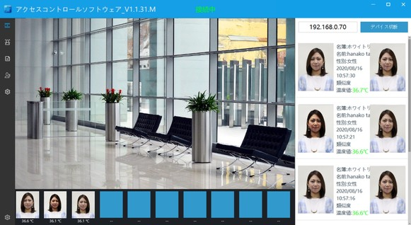
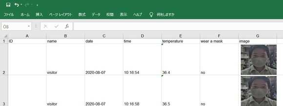

体表面
温度測定
顔認証
マスク
チェック
特定の場所に出入りする人をAIが自動でチェック
非接触型検温機能付き顔認証端末
フェイス&サーモ
※表面温度分布を測定する機器です。
体温計などの医療機器ではございません。
WITH コロナ の時代に安心を
3つの機能を自由に組み合わせて利用可能
体表面温度測定モード
体表面温度のみを測定します。

顔認証モード
データベースに登録された人物か認証を行うモードです。
最大5万人分のデータを登録可能です。
マスクチェックモード
マスクを着用していない場合、マスク着用を促します。
特徴
FEATURES
誤差±0.3度
高精度
ONVIF接続で
レコーダーと連携可能
レコーダーで映像録画も可能
リレー信号で
ドアと連携可能
無電圧接点の出力が可能
AI顔認証
高精度な検出精度
顔データ1万件保存可能
ブラックリスト機能あり
非接触
マスク着用でも顔認識可能
PCでデータ
ベース管理可能
まずは無料で相談
不特定多数の来客者の体温及びマスクのチェックに
店舗やオフィスの入口で、簡単にチェックができます。異常体温時は音声でお知らせします。
ネットワーク経由で遠隔地にいながらもリアルタイムで状況を確認することもできます。
温度管理だけなら、電源に接続するだけですぐ使用可能！
従業員の日々の管理に
顔認証機能がついているので従業員の体温測定及び出退勤管理の用途でも使用可能。
PCへ端末内に保存した日々のデータをエクスポートする事も可能です。
レコーダーと組み合わせて
出入り口の防犯対策に
フェイス＆サーモの映像をレコーダーで長期間録画も可能。
※本製品にレコーダーは付属しません。
別途レコーダーの購入が必要です。
PC接続でできること
HOW TO USE WITH PC
PCで接続すると、端末で測定した日付、時間、温度と測定した人の顔写真を確認する事ができます。
リアルタイムモード
端末が設置された場所の様子をリアルタイムで確認できます。
顔の管理
顔の管理では顔写真や氏名、従業員番号等を端末に登録できます。
ログビュー
ログビューでは端末に登録された人物の検温結果や時間、マスク着用状態を確認し、結果一覧をエクセルファイルに出力することができます。
出力されたエクセルファイルは図のように表示されます。出勤時刻（1日の中で検温した一番早い時刻が記載されます）、退勤時刻（1日の中で検温した一番遅い時刻が記載されます）、温度、マスク着用の有無が記録されています。
訪問者記録
訪問者記録では端末の顔データベースに登録されていない人物の顔認証や検温の結果を確認し、結果一覧をエクセルファイルに出力することができます。

エクセルファイルには訪問者の検温時刻、マスク着用の有無、スナップショットが記録されます。
- START -
さあ、フェイス&サーモを導入しましょう
さまざまな場所で効果を発揮しています
-
オフィス
-
工場
-
イベント会場
-

教育機関
-

店舗
スタンド取付イメージ
-
入口に設置して、体表面温度を簡単に測定
顔認証機能で、関係者の出退勤時間も記録できますオフィスの入口に設置して出退勤の時間を自動で記録するほか、イベントの会員を登録しておいて限定イベント開催などにも役立てられます。
小型で場所を取らないので、必要な場所に簡単に設置できる点もかなり便利です。
まずは無料で相談
補助金を活用して
コストを抑えて導入も可能
「新型コロナ感染対策」に取り組む企業への支援策を各都道府県や省庁が広報しております。
-
小規模事業者持続化補助金
＜コロナ特別対応型＞事業再開枠として50万円の補助金が新たに設けられ、体温計・サーモカメラといった事業を継続するための感染防止対策に必要な衛生管理のための機器の購入費を補助上限:50万円、補助率：定額補助（10／10）で補助されます。
申請期限は令和2年10月2日までです。 -
新型コロナウイルス感染予防対策ガイドライン等に基づく
対策実行支援事業(東京都のみ)都内中小企業者（会社及び個人事業者）、一般財団法人、一般社団法人、特定非営利活動法人（NPO法人）、中小企業団体等に対し感染予防対策に直接必要な内装・設備工事費を助成しています。
備品購入（１点あたりの購入単価が税抜１０万円以上）の場合、最大50万円、購入金額の2/3が助成されます。
申請期限は令和2年8月31日までです。
申請時に見積書が必要な場合があります。
見積書発行をご希望の方は遠慮なくご相談ください。
製品仕様
| 画面サイズ | 8インチLCD |
|---|---|
| センサー | 熱画像赤外線温度センサー |
| 温度測定範囲 | 範囲：35〜42℃、精度： ±0.3℃ |
| 検出距離 | 0.4m〜0.7m |
| レンズ | レンズ焦点距離1.8mm、視野：118° |
| 最低被写体照度 | 0.005Lux@F1.2 カラーモード |
| ダイナミックレンジ | ≥120dB |
| S/N 比 | ≥46dB (AGC OFF) |
| 露出モード | プログラムモード（カスタマイズ可能なシャッター間隔）、スローシャッターのシャッターモード（1/5〜1 / 20,000秒）のサポート |
| ホワイトバランス | 自動、屋内、屋外、ナトリウムランプモード、手動 |
| デジタルノイズリダクション | サポートDNR、3DNR |
| デイ＆ナイトモード | カラー固定 |
| ビデオ圧縮 | H.265メインプロファイル/ H.264ハイプロファイル/ M-JPEG |
| 最大解像度 | 1920×1080@30fps |
| メインストリーム解像度 | 1920×1080、1280×960、1280×720、720×576 |
| サブストリーム解像度 | 640×480、352×288、320×240、176×144 |
| MJPEG解像度 | 1920×1080、1280×720、closed |
| 出力ビットレート | CBRまたはVBR）、ビットストリーム設定範囲：32Kbps〜10Mbps |
| オーディオ圧縮 | G711、PCM |
| 文字オーバーレイ | サポートチャネル名、日付と時刻、オーバーレイの位置調整可能。 |
| フェイスベース数 | 50,000 枚 |
| 認識速度 | ≤300ms |
| ライブ検出 | 対応 |
| マスク検出 | 対応 |
| 体温警報 | 対応 |
| 電源 | DC12V |
| ネットワーク | 10 / 100BaseTイーサネットRJ45インターフェイス x1 |
| ウィーガンド | ウィーガンド出力インターフェース x1 |
| 出力 | リレー出力 x1 |
| メモリー容量 | 16G, 最大128G |
| マイク | 内蔵 |
| オーディオ | 内蔵2chオーディオ出力 |
| 動作温度 | -10°C 〜50°C |
| 動作湿度 | 0%-90% RH |
| 消費電力 | 5W |
| サイズ | 215x125x20mm |
| 正味重量 | 400g |
まずは無料で相談